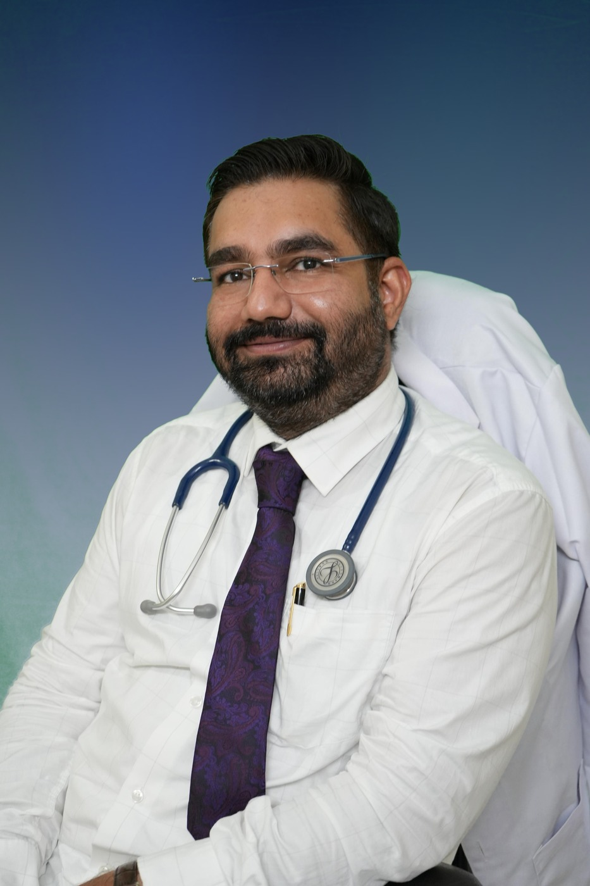

MBBS
U.P. University of Medical Sciences, Saifai
About the doctor
Dr. Kulwant Yadav serves patients from Bhiwadi and the South Haryana belt with evidence-based medical care shaped around modern lifestyle disease patterns, everyday illness, and the need for long-term follow-up.

Professional overview
Dr. Kulwant Yadav is a Consultant in Internal Medicine with a strong background in general medicine, emergency care, and critical care. He supports patients with diabetes, hypertension, obesity, fatty liver, fever, infections, digestive concerns, kidney-related issues, sleep disturbance, and stress-related symptoms.
His consultations are designed to bring clarity. Patients are guided through diagnosis, investigations, treatment options, and long-term prevention in simple language that makes the plan easier to follow.
He is also associated with Gopinath Hospital, Bhiwadi, as an Honorary Consultant.
Clinical strengths
Education and credentials
U.P. University of Medical Sciences, Saifai
National Board of Examinations in Medical Sciences, New Delhi
NIMHANS, Bengaluru
Royal College of Emergency Medicine, UK
Research and expertise
Dr. Kulwant Yadav's academic profile includes ongoing work related to MASLD and Saroglitazar, along with publications in critical care and cardiology. His DNB thesis explored the relationship between diabetes and heart health, reflecting a strong interest in metabolic disease and long-term complication prevention.
For patients, this translates into treatment that is grounded in updated knowledge and not just routine symptom relief.
Patient approach
The aim of each consultation is not only to prescribe treatment, but also to help patients understand what is happening, what needs monitoring, and how lifestyle changes fit into the medical plan.
This is especially important for patients living with more than one condition at once, such as diabetes plus BP, obesity plus fatty liver, or poor sleep plus chronic fatigue.
Need trusted physician care?